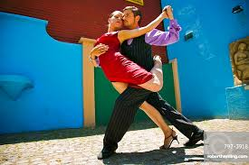
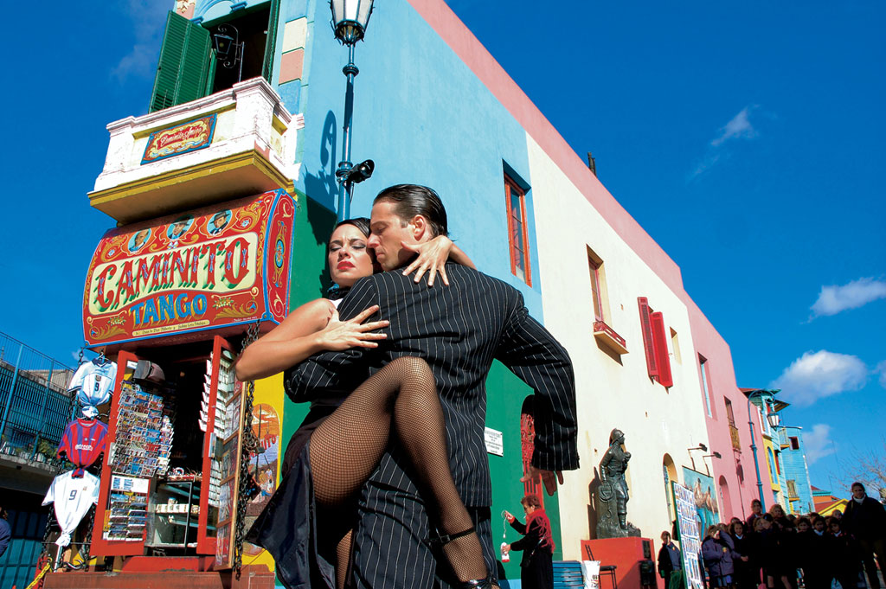
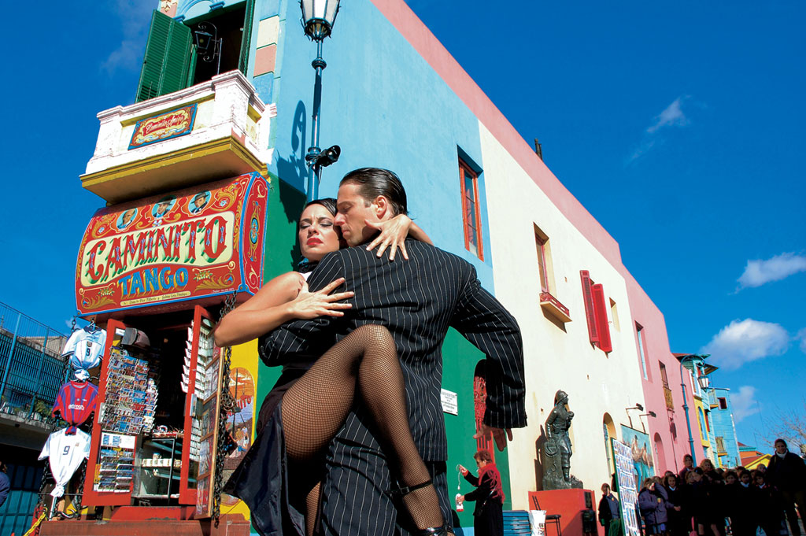

El Teatro Colon

Das heutige Teatro Colón, zwischen der Plaza Lavalle und der Avenida 9 de Julio
gelegen, wurde von 1889 bis 1908 von den Architekten Francesco Tamburini,
Angelo Ferrari, Victor Meano und Julio Dormal erbaut.
Es wurde am 25. Mai 1908 mit der Oper Aida von Giuseppe Verdi eröffnet.
Das Theater hat 2500 Sitz- und 1000 Stehplätze.
Der Haupteingang des Theaters liegt an der Plaza Lavalle und nicht,
wie man vermuten könnte, an der Avenida 9 de Julio, der Prachtstrasse von
Buenos Aires. Dies liegt daran, dass zur Bauzeit des Teatro Colón die Avenida
noch nicht existierte; Sie wurde erst 1937 fertiggestellt. Das Theater war seit
dem 1. November 2006 wegen Renovierungsarbeiten geschlossen und sollte
am 25. Mai 2008 zum 100-jährigen Jubiläum wieder eröffnet werden.
Wegen der prekären finanziellen Lage der Stadt war der Termin nicht zu halten,
es wurde schließlich am 24. Mai 2010, zur 200-Jahr-Feier der argentinischen
Unabhängigkeitsbewegung, wiedereröffnet.
Die Kultur des Essen in Argentinien

 Ein Asado ist eine landestypische Grillmahlzeit. Es wird häufig veranstaltet
und bildet oft die sonntägliche Mahlzeit in der Großfamilie oder im
Freundeskreis. Jeder Asador („Grillmeister“) hat seine eigene Art
Gegrilltes zuzubereiten, jedoch dauert das Grillen meist Stunden und ist ein
kleines gesellschaftliches Ereignis.
Die Zutaten bestehen aus allem, was ein Rind, ein Schaf oder ein Schwein zum
Grillen bereitstellt. Die klassischen Zutaten im Raum Buenos Aires sind
diverse Fleischsorten wie Matambre (Schweine- oder Kalbsbauch),
Tira de Asado (flache Rippe), Rumpsteak (Bife de Chorizo) und Lomo (Lende)
sowie Chorizos, Blutwürstchen (Morcillas) und verschiedene Innereien,
wie beispielsweise Därme (Chinchulines), Niere (Riñones) oder Bries (Molleja).
Der Auswahl der Zutaten sind jedoch keine Grenzen gesetzt. Oft wird zum
Grillfleisch Chimichurri (Soße) gegessen. Das oberhalb der Soße abgesetzte Öl
wird vor dem Grillen oder währenddessen auf das Fleisch gegeben.
Ein Asado ist eine landestypische Grillmahlzeit. Es wird häufig veranstaltet
und bildet oft die sonntägliche Mahlzeit in der Großfamilie oder im
Freundeskreis. Jeder Asador („Grillmeister“) hat seine eigene Art
Gegrilltes zuzubereiten, jedoch dauert das Grillen meist Stunden und ist ein
kleines gesellschaftliches Ereignis.
Die Zutaten bestehen aus allem, was ein Rind, ein Schaf oder ein Schwein zum
Grillen bereitstellt. Die klassischen Zutaten im Raum Buenos Aires sind
diverse Fleischsorten wie Matambre (Schweine- oder Kalbsbauch),
Tira de Asado (flache Rippe), Rumpsteak (Bife de Chorizo) und Lomo (Lende)
sowie Chorizos, Blutwürstchen (Morcillas) und verschiedene Innereien,
wie beispielsweise Därme (Chinchulines), Niere (Riñones) oder Bries (Molleja).
Der Auswahl der Zutaten sind jedoch keine Grenzen gesetzt. Oft wird zum
Grillfleisch Chimichurri (Soße) gegessen. Das oberhalb der Soße abgesetzte Öl
wird vor dem Grillen oder währenddessen auf das Fleisch gegeben.
Der Tango

 

Unter dem Oberbegriff Tango wird sowohl der Tanz als auch die Musikrichtung Tango
verstanden. Dabei hat der Tango auch in der Dichtung und im Gesang eigenständige
Ausdrucksformen hervorgebracht. Seit dem Ende des 19. Jahrhunderts hat sich der
Tango in verschiedenen Formen von Buenos Aires aus in der gesamten Welt verbreitet.
Zur Unterscheidung gegenüber dem (gelegentlich europäischer Tango genannten)
Standardtango des Welttanzprogramms wird die ursprünglichere (weniger reglementierte)
Form des Tanzes und die zugehörige Musik weltweit Tango Argentino genannt.
In Argentinien selbst ist die Bezeichnung nicht üblich, dort spricht man in der Regel
schlicht von Tango. Der Tango gehört seit September 2009 zum Immateriellen Kulturerbe
der Menschheit der UNESCO.